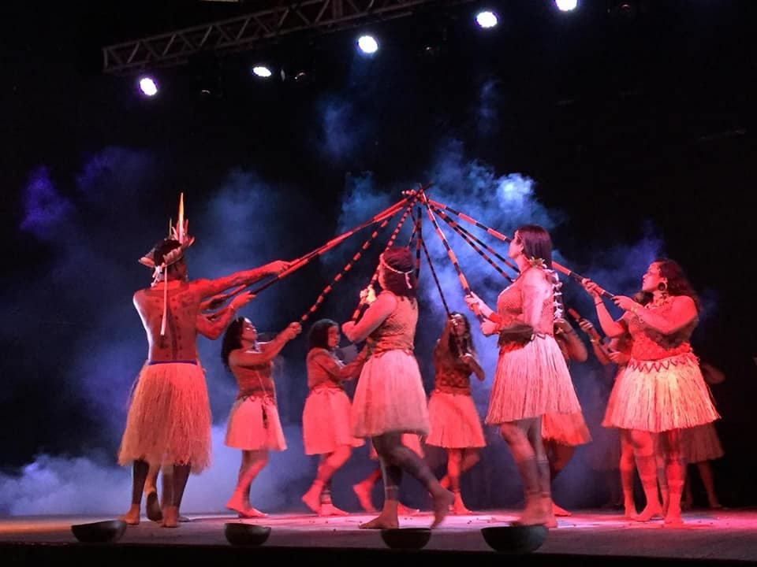
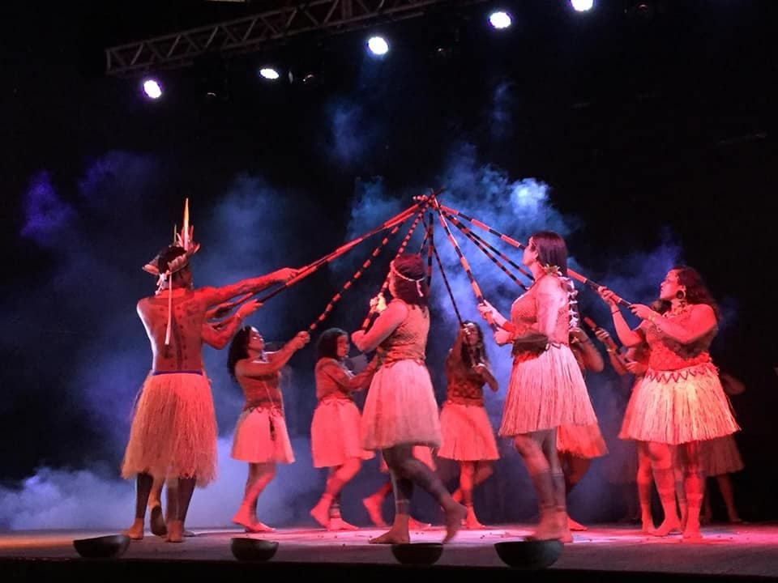
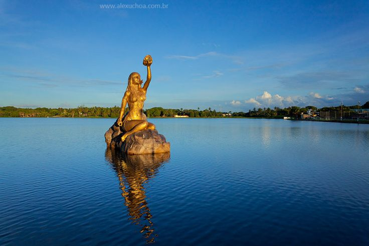
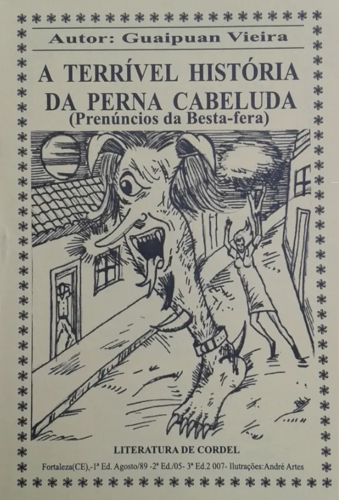
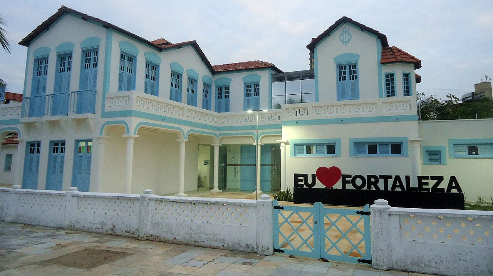
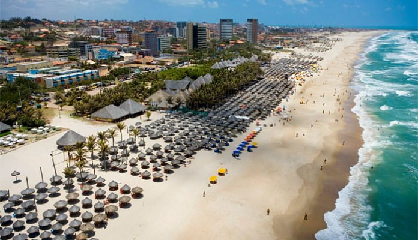
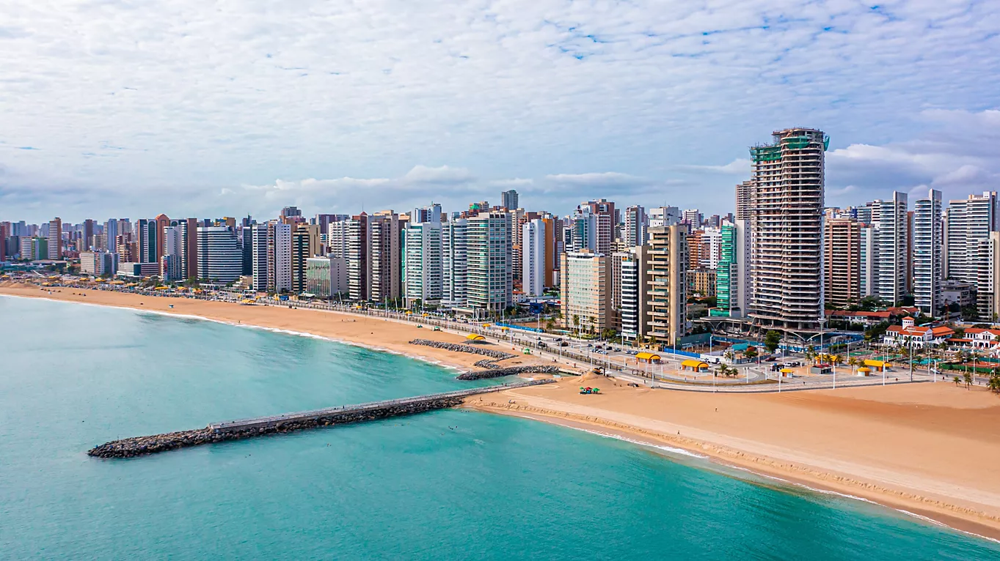

Origem da cidade de Fortaleza!
A formação de Fortaleza remonta à presença indígena e ao contato com colonizadores europeus no início do século XVI.
A ocupação efetiva ocorreu no século XVII, com a construção de fortificações. Em 1649, os holandeses ergueram o Forte
Schoonenborch, retomado pelos portugueses em 1654 e rebatizado como Fortaleza de Nossa Senhora da Assunção, origem
do nome da cidade.

No final do século XVII e ao longo do XVIII, Fortaleza consolidou-se como núcleo político. Em 13 de abril de 1726,foi elevada
à categoria de vila, data que marca o aniversário da cidade. Em 1799, após a separação do Ceará da Capitania de Pernambuco,
firmou-se como capital, sendo elevada à categoria de cidade em 1823.

A partir do século XX, vivenciou rápido crescimento demográfico e urbanístico, impulsionado por reformas de infraestrutura,
industrialização e fortalecimento do turismo. As décadas de 1950 e 1960 marcaram expressiva expansão econômica e, a partir
dos anos 1970, a instalação de polos industriais consolidou sua posição como centro econômico regional.
Riqueza cultural de Fortaleza!
A cultura desenvolvida em Fortaleza aos longo de sua história, acumulou muitas formas de expressão dos sentimentos de sua população.
As manifestações religiosas tem grande importância para a vida cotidiana e os valores das famílias fortalezenses. A festa da padroeira da
cidade, Nossa Senhora da Assunção em 15 de agosto, é um importante evento, bem como as Festas Juninas.
Centro Dragão do Mar de Artes e Cultura
O Centro Dragão do Mar de Arte e Cultura é um complexo cultural localizado em Fortaleza, Ceará, Brasil. Inaugurado em 1999, tornou-se um dos
principais polos de arte, lazer e turismo do Nordeste, reunindo museus, teatros, cinemas e espaços de convivência em uma área revitalizada
próxima à Praia de Iracema.

Construído em uma antiga zona portuária, o centro integra prédios históricos restaurados e estruturas modernas, criando um marco arquitetônico urbano.
O nome homenageia Francisco José do Nascimento, o “Dragão do Mar”, jangadeiro e abolicionista cearense. O projeto foi parte de um amplo esforço de
revitalização da área central de Fortaleza.
O complexo abriga o Museu de Arte Contemporânea do Ceará, o Museu da Cultura Cearense, o Planetário Rubens de Azevedo, duas salas de cinema, teatros e o
anfiteatro ao ar livre Sérgio Mota. Há também cafés, lojas e espaços para feiras, shows e exposições temporárias


O Centro Dragão do Mar é um importante espaço de promoção da cultura e arte cearense, atraindo visitantes locais e turistas, contribuindo para a valorização
da identidade cultural de Fortaleza e do Ceará.
Theatro José de Alencar
O Theatro José de Alencar é um marco arquitetônico e cultural localizado em Fortaleza, Ceará, Brasil. Inaugurado em 1910, é reconhecido por sua estrutura em
ferro fundido em estilo art nouveau e por sua importância na cena teatral e artística cearense. O teatro é tombado como patrimônio histórico nacional pelo
Instituto do Patrimônio Histórico e Artístico Nacional.
O projeto do Theatro José de Alencar combina uma fachada em alvenaria neoclássica com uma estrutura interna de ferro fundido fabricada pela empresa escocesa Walter
MacFarlane & Co. Seu salão principal possui vitrais coloridos e detalhes decorativos característicos do início do século XX. O nome homenageia o escritor cearense
José de Alencar, figura central do romantismo brasileiro.


Mais do que um teatro histórico, o espaço abriga intensa programação cultural, incluindo peças teatrais, espetáculos musicais, exposições e oficinas artísticas. O complexo
também sedia o Centro de Artes Cênicas do Ceará e um jardim interno onde são realizadas apresentações e eventos comunitários.
O teatro passou por diversas restaurações para preservar sua estrutura metálica e elementos ornamentais originais. É aberto à visitação guiada, oferecendo aos visitantes uma
imersão na história cultural e arquitetônica de Fortaleza. O Theatro José de Alencar continua a ser um dos principais símbolos da identidade artística do Ceará e um ponto de
referência turística na cidade.
Lista de museus em Fortaleza:
Lista de teatros em Fortaleza:
(Existem ainda muitos outros pequenos teatros comunitários e salas de apresentações na cidade.)
Folclore de Fortaleza
O folclore de Fortaleza é uma rica mistura de influências indígenas, africanas e ibéricas, destacando-se
o Maracatu (patrimônio imaterial), o Bumba-meu-boi (Boi-Ceará), o Torém e a Dança do Coco. A capital cearense
celebra sua tradição popular através de festivais, violeiros e lendas urbanas, sendo o Centro Dragão do Mar de Arte e Cultura
um dos principais polos de valorização dessa cultura.
 

Lendas e tradições de Fortaleza
O folclore de Fortaleza é rico em lendas urbanas assustadoras e histórias irreverentes, destacando-se a Iracema, a Perna Cabeluda,
o Bode Ioiô, e a Bailarina Fantasma do TJA. Essas narrativas misturam medo e humor, refletindo a cultura popular cearense, com
relatos que marcaram gerações, como a perna que perseguia pessoas nos anos 80/90 e o famoso bode que frequentava bares.
Iracema: Mais que uma lenda, a "virgem dos lábios de mel" de José de Alencar é o mito fundador da identidade cearense e fortalezense.
Perna Cabeluda: Lenda urbana de uma perna com pelos que perseguia pessoas, especialmente crianças, nos anos 80/90.
Bode Ioiô: Lenda urbana de um bode que aparecia em bares e locais noturnos, com histórias de aparições assustadoras.

Prédios tombados
Fortaleza possui diversos prédios e monumentos tombados para preservar sua história, com destaque para o Teatro José de Alencar, a Fortaleza de Nossa Senhora da Assunção,
o Passeio Público e o Estoril. As proteções variam entre esferas federais, estaduais e municipais, incluindo casarões históricos no Centro, museus e conjuntos arquitetônicos.
Alguns prédios tombados por Fortaleza:
CAPELA DE SANTA TERESINHA

Após dois anos de construção, a capela foi inaugurada em 1928. A edificação está localizada no antigo bairro Arraial Moura Brasil, popularmente conhecido como “Curral”.
ESTORIL
Chamado de Vila Morena, o palacete de taipa foi erguido, em 1925, com materiais vindos de diferentes países europeus. Por causa da Segunda Guerra Mundial, o local foi ocupado por soldados americanos.
Terminada a guerra, o lugar passou a ser administrado por portugueses, tornando-se bar e restaurante.
ESPELHOS DE ÁGUA DAS LAGOAS DE MESSEJANA E PARANGABA
A Lagoa de Messejana é um espaço famoso pela presença da estátua de Iracema, inaugurada em 2004 e que faz referência à personagem do escritor cearense José de Alencar. É a segunda maior lagoa do Município,
tendo importante papel no nascimento do bairro e no desenvolvimento histórico da cidade de Fortaleza.
TEATRO SÃO JOSÉ
Foi inaugurado em 1915 como uma alternativa frente ao difícil acesso ao Theatro José de Alencar, concluído poucos anos antes. O prédio foi tombado em 1988 e desapropriado pela Prefeitura em 2010 para reformas.
De 2016 a 2018, o espaço foi restaurado e ampliado em 40%, além da construção de prédio anexo e a reestruturação da edificação, erguida em estilo eclético.
PONTE DOS INGLESES
A ponte de ferro no mar resistiu durante duas décadas, mas acabou corroída. Em 1920, começaram as obras de substituição do material pelo concreto. O espigão, que se estende ao longo de 120 metros para o mar, servia
para embarque e desembarque de mercadorias. Foi batizada como Ponte dos Ingleses por causa da empresa britânica que desenvolveu o projeto.
Fortaleza, no Ceará, é um dos destinos turísticos mais procurados do Brasil, famoso por suas praias urbanas (Meireles, Iracema), sol o ano todo e uma agitada vida noturna na orla. A cidade oferece atrações imperdíveis como o Beach Park,
a Feirinha de Artesanato da Beira-Mar, o Centro Dragão do Mar de Arte e Cultura e passeios de buggy para praias próximas como Cumbuco e Morro Branco.
Praia do futuro
Praia do Futuro é uma das praias mais conhecidas e frequentadas de Fortaleza, situada a cerca de 8 km do centro urbano. Reconhecida por sua ampla faixa de areia, mar de ondas fortes e barracas de praia com infraestrutura completa, é um dos
principais cartões-postais do litoral cearense e ponto central da vida praiana local.
Praia do Futuro destaca-se pelas grandes “barracas” — complexos de lazer com restaurantes, piscinas, música ao vivo e áreas infantis. Locais como CrocoBeach e Chico do Caranguejo são ícones da praia. Às quintas-feiras, o “Dia do Caranguejo” atrai
moradores e turistas para provar a iguaria típica acompanhada de forró. Também são oferecidas atividades como surfe, vôos de paramotor e esportes aquáticos.
Praia de iracema
A Praia de Iracema, em Fortaleza, é uma das praias urbanas mais emblemáticas do Nordeste do Brasil. Situada no coração da capital cearense, combina mar, cultura e vida noturna em um ambiente boêmio e vibrante que atrai moradores e turistas o ano inteiro.
O bairro surgiu no início do século XX como “Praia do Peixe”, área de pescadores e boemia. Tornou-se ponto de encontro de artistas e intelectuais a partir da década de 1940. Seu nome atual homenageia a heroína indígena criada por José de Alencar, símbolo da fusão
entre culturas indígena e europeia. Após períodos de declínio, projetos de revitalização transformaram a região em polo turístico e cultural.